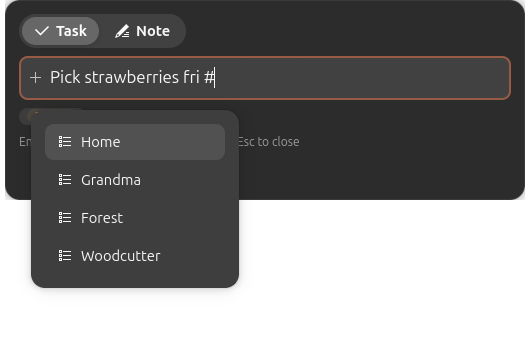
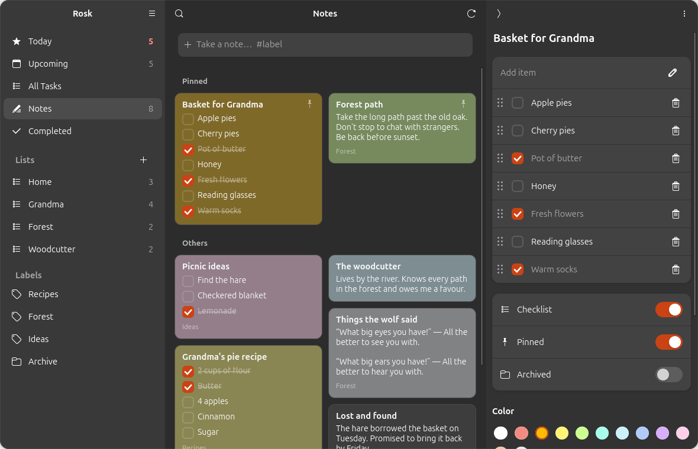

Задачи и заметки для GNOME
Записал.
Вычеркнул.
Читаешь письмо из банка и понимаешь, что завтра надо туда позвонить. Вот чем мне удобен Rosk — можно записать дело, пока письмо перед глазами.
Установить Rosk

Как добавить дело
Нажми Super + Alt + R, набери «Позвонить в банк завтра #работа» и нажми Enter. Звонок появится в списке «Работа» со сроком на завтра.
Позвонить в банк завтра #работа
Задачи и заметки
Если пользуешься Google Tasks, подключи его к Rosk. Вычеркнешь дело на телефоне — оно и на компьютере будет отмечено как выполненное. Для заметок можно подключить Google Keep. Без интернета тоже можно записывать, а когда появится связь, Rosk всё синхронизирует.

Утренняя сводка
Утром в одном уведомлении видно, что у тебя на сегодня и у каких дел уже прошёл срок.

Заметки
Если часто открываешь одну и ту же заметку, закрепи её сверху.


Списки с галочками
В заметке можно вычёркивать пункты по одному.
Как поставить Rosk
Для Ubuntu 25.04 или новее либо Debian 13 или новее. Нужен GNOME 48 или новее.
Скачать Rosk 0.2.0 (.deb)- Скачай
rosk_0.2.0_all.deb. - Открой терминал в папке, куда скачал файл, и выполни команду:
sudo apt install ./rosk_0.2.0_all.deb - Выйди из сеанса и войди снова, чтобы значок Rosk появился в панели GNOME.
Чтобы подтянуть задачи из Google Tasks, добавь аккаунт Google в сетевые учётные записи GNOME. Чтобы подтянуть заметки, войди в Keep через настройки Rosk.
Установка через APT или из исходников